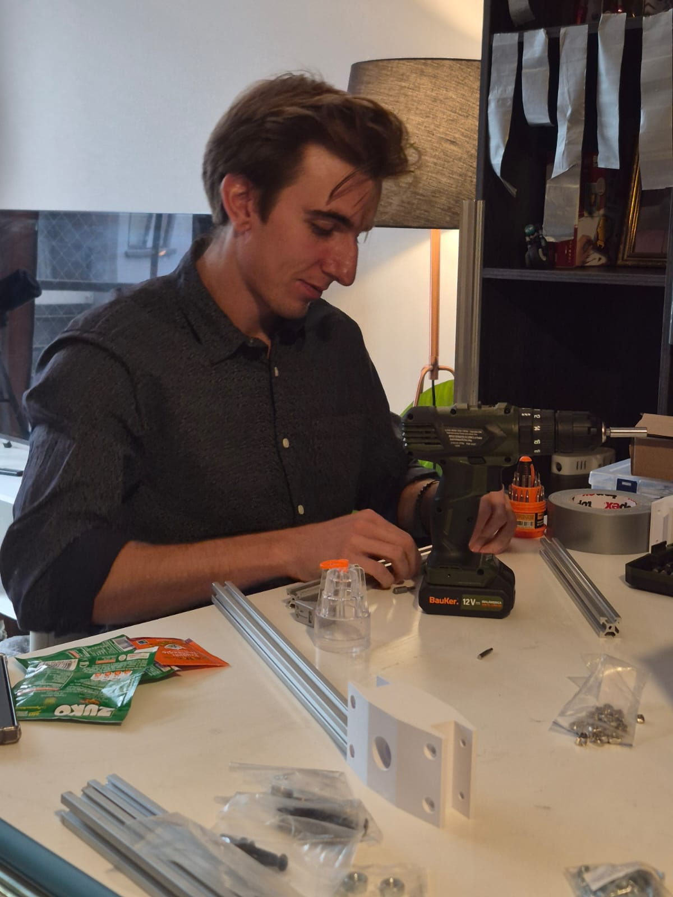

Desarrollo progresivo de vehículos de sondeo atmosférico. Desde la comprensión empírica de fluidos y estabilidad mediante el Cohete de Agua (1 Unidad), hasta el diseño computacional de fuselaje de fibra, aviónica de altimetría y sistemas de propulsión del Cohete 3U (Plataforma Emblema).
Dominio de la propulsión química, dinámica de fluidos y estabilidad de vuelo.
Coordinación de 7 estudiantes en aerodinámica, estructura, aviónica y seguridad de campo.
Pruebas hidráulicas y neumáticas en banco de taller para asegurar la integridad de tanques.
Centro de presión ubicado detrás del centro de masa para evitar volteretas en ascenso.
Registro de curvas de aceleración, presión atmosférica y cálculo de apogeo real.
La plataforma Cohete 3U representa nuestro proyecto insignia en el eje de cohetería. Diseñada como un vehículo modular de tres unidades de volumen para albergar cargas útiles experimentales (CanSat o sensores de radiación). Su desarrollo abarca el cálculo de empuje, simulación de trayectorias en OpenRocket, diseño de aletas con perfil elíptico en fibra compuesta y computadores de vuelo redundantes con pirotecnia de eyección.
Detección precisa del punto culminante de la trayectoria mediante derivada de presión barométrica para desplegar la carga útil con suavidad.

Para aprender cohetería no partimos con explosivos: partimos con agua y aire a presión. Esta iniciativa formativa es nuestra primera puerta de entrada para estudiantes nuevos. Utilizando botellas de plástico PET como fuselaje y tanque de presión, los integrantes calculan la relación óptima de agua (aproximadamente un tercio del volumen), diseñan aletas en impresión 3D y fabrican paracaídas de tela ligera, experimentando en persona las leyes de Newton.
Permite realizar decenas de lanzamientos sucesivos a bajo costo, afinando el método de ensayo, registro de datos y trabajo en equipo.

La diferencia entre un proyectil descontrolado y un vuelo recto radica en el dominio de las fuerzas aerodinámicas y los sistemas de retorno seguro.

Para asegurar un ascenso vertical estable, el Centro de Presión (CP) debe situarse al menos 1.5 calibres por detrás del Centro de Gravedad (CG). Ajustamos el lastre en la ojiva y el tamaño de las aletas para corregir el comportamiento en vuelo.

El paracaídas se pliega meticulosamente dentro de la ojiva frontal. Al alcanzar el apogeo, la desaceleración y el flujo de aire permiten que la tapa se desprenda por gravedad o rozamiento, desplegando las líneas para un aterrizaje suave e íntegro.

Utilizamos rampas con rieles de guiado mecánico para asegurar que el cohete adquiera velocidad antes de dejar el apoyo físico. Establecemos protocolos estrictos de distancia de seguridad y presurización remota.
Del cálculo en papel a la rampa de lanzamiento en campo abierto.
Selección de geometrías de baja resistencia al avance (von Kármán o parabólica) y cálculo dimensional de aletas estabilizadoras en CAD.
Validación de sellado hermético entre cámaras a 80 PSI utilizando agua para verificar la resistencia antes de cargar aire comprimido.
Plegado de líneas de nylon, empaque del paracaídas en la sección frontal y verificación de holguras para evitar bloqueos mecánicos.
Operación en terreno con oficial de seguridad (RSO), seguimiento de trayectoria, recuperación del fuselaje y extracción de datos del altímetro.
Buscamos estudiantes de todas las carreras con curiosidad por la aerodinámica, la manufactura de materiales compuestos o la aviónica de telemetría. ¡No requieres experiencia previa, te formamos desde los conceptos básicos!
Ponte en Contacto con Nosotros ✉